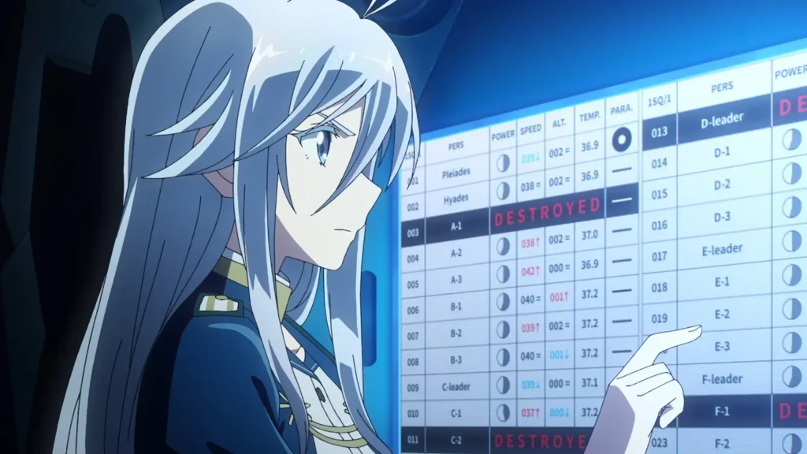

I'm KoiKoi4 a:
- self-taught programmer
- aspiring musician
 Being self-taught has allowed me to create a solid understanding of many concepts, as I have more of a practical knowledge and experience compared to my peers. Through using libraries, such as Flask, discord.py and tensorflow I have developed a good-taste for OOP and structuring projects. I wouldn't say that any of my current projects are representative of my current skill (I haven't had time to work on projects due to my academic work load). However, being in A-Level (and taking CS), I will be working on an NEA shortly.
The NEA is a non-exam assessment, and it is akin to a final year project at university, (my NEA is with the AQA exam board). I have decided to make a compiler explorer, that converts a language (like C) into some sort of assembly and shows what parts of the code correspond to what assembly. Have I mentioned that I will be doing this from scratch! I will be writing up the lexer, parser with no external dependencies. There is also a student in my class who is creating a project to illustrate how a CPU executes code. I want to work with this student on making an assembly language that we can use across our projects (just for the sake of it really).
Relating to my musical abilities. I play the bagpipes in my school's marching band, and have had the pleasure of playing at the events/venues listed below:
| Event Name | Year | |
|---|---|---|
| Menin Gate A yearly event where we play in Menin Belgium. | 2023 | |
| American Battle Monuments Commission Centenary | 2023 | |
| Rosslyn Park National Schools 7s | 2023 | |
| Caledonian Club Summer Ball The Caledonian Club, is a prestigious Scottish organization. | 2023 | |
| CCF Biennial Inspection | 2023 | |
| National League Playoff Finals Played at 1420 to entertain the crowd at wembley stadium. | 13 May 2023 | |
| Armed Forces Day | 24th June 2023 | |
| Festival of Education This event was hosted by Wellington collage. | Summer 2023 | |
| Surrey Police Pass Off Parade | 2023 | |
| Brookwood Last Post | 2023 | |
| Lord Mayor's Show London Festival, where we marched for 90 minutes, playing every 5 to 10 minutes. | 2023 | |
| Aldershot Military Museum 40th Birthday | 2024 | |
| D-Day Celebrations Venue: Hungerford | 2024 | |
| Menin Gate Second Trip | 2024 | |
| Aldershot FC Remembrance March | 2023 | |
| Brookwood Last Post | 2024 | |
| Menin Gate Third Time | 2025 | |
| New York Creative art's department trip to NYC. | 2025 | |
| SCHEDULED EVENTS | ||
| London Band Week/2025 London Tatoo | 2025 | |
not to mention all of the marshals at events such as the Lord Mayor's Show
I am also a member of my school's intermediate jazz band, and play bass guitar. As I'm a fairly new member I haven't played at many large events yet.